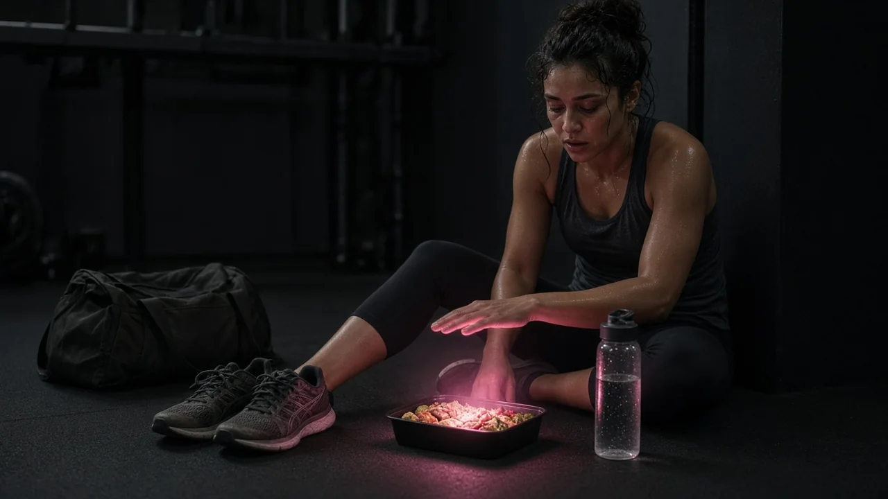

A demanding training plan needs enough fuel to support the person doing it. When exercise demands repeatedly exceed the energy available after eating, more discipline is not necessarily the answer. Sometimes the plan needs more food, more recovery, or both.
The International Olympic Committee describes low energy availability as insufficient dietary energy left for normal body functions after exercise expenditure. Persistent or severe exposure can contribute to Relative Energy Deficiency in Sport, commonly called REDs. Its effects can involve reproductive function, bone health, recovery, and other systems in athletes of different sexes. [1]
This is a specific health framework, not a diagnosis for everyone who feels tired after a workout. A change in desire, menstrual function, or training performance can have several explanations. The IOC emphasizes clinical assessment and a broader context; one symptom or an online calorie calculation cannot establish REDs. [1]
Why this belongs in a sexual-health conversation
Fitness culture sometimes treats reduced appetite, constant fatigue, and an increasingly rigid food plan as evidence of commitment. That makes it easy to miss the possibility that a routine is becoming difficult to sustain physically. Sexual and reproductive concerns deserve to be heard alongside exercise goals, rather than dismissed as the price of progress.
You do not have to be pursuing a particular appearance to raise the question. Training volume, schedule changes, food access, and limited time can all make eating enough harder to manage. The useful question is whether the whole routine is supporting your health, and what evidence your clinician or sports dietitian needs to assess that.

Build a training day you can actually feed
This planning framework is an original organizational tool, not a calorie prescription or a treatment protocol.
Start by writing down your likely waking hours and the time you expect to exercise. Then identify where meals will happen. If the only answer is "when I get around to it," make one meal or snack easier before making training harder.
Consider these practical questions:
- Is food available before or after a session, or does travel create a long gap?
- Have I increased exercise while keeping meals the same or making them smaller?
- Do work, caregiving, finances, or digestive symptoms repeatedly interrupt eating?
- Am I avoiding whole food groups without a clear reason or a replacement plan?
- Can I prepare a backup meal that takes less effort than skipping dinner?
The answers identify obstacles. They do not assign blame. A sandwich in the refrigerator can solve a scheduling problem that another motivational speech cannot touch.
Three original snack combinations
Toast and yogurt: Spread a tolerated nut or seed butter on toast and serve with yogurt or a suitable alternative. Use ingredients that fit your allergies and preferences.
Bean and rice cup: Warm leftover cooked rice and canned beans safely, then add salsa and grated cheese or another topping you enjoy. Prepare a fresh portion if you are uncertain about the storage history of leftovers.
Banana oat drink: Blend a banana with milk or a suitable alternative and a spoonful of oats. Add a tolerated nut butter if you want a thicker drink. This is a convenience idea, not a recovery formula tested for sexual function.
None is nutritionally identical to the others, and none comes with a universal portion size. They are examples of making food available when preparation energy is low. A dietitian can help tailor intake to your actual needs.
Take a pattern to an appointment
If you are concerned, describe what changed: training frequency, meal access, restrictive habits, menstrual changes if relevant, libido, fatigue, injuries, and recovery. The IOC consensus discusses these kinds of signals within a full clinical assessment, while recognizing that other causes need consideration. [1]
You can say, "My exercise increased and my eating became less regular. I have also noticed this symptom. Could inadequate fueling be part of the picture, and what else should we check?" That leaves room for a real evaluation instead of arriving with a fixed diagnosis.
Avoid using an article to set an aggressive calorie target, diagnose a hormone problem, or continue training through illness and injury. If eating has become frightening, compulsive, or difficult to change, include that fact in the conversation. You deserve support for the pattern, not a lecture about willpower.
Fitness should be compatible with being fed, rested, and able to live your life. Sexual health is one reason to examine that balance; your overall health is enough reason on its own.
ONE SMALL THING TO TRY
Identify one obstacle to eating around training and prepare a realistic backup meal or snack.
Open Private reflectionMAKE IT USEFUL
Review a recovery concern
About 3 minutes · Private preparation · Optional
Try one small step
Note a change in energy or recovery you want to understand and a question for a qualified professional. Do not use this as a diagnosis.
Words you could adapt
Could my routine be relevant to this concern, and how should we assess it?
Use this only if it helps you prepare a question for a qualified professional. You can skip or stop; this is not diagnosis or treatment.
Open the related toolAbout this guide and its sources
- Publisher
- Vulpes Ignis
- Learning level
- intermediate
- Source type
- peer reviewed publication
- Linked sources
- 1
- Recorded source check
- November 23, 2026
- Professional clinical review
- Not claimed
Learning level describes the reading approach, not activity safety or permission. A source type describes the linked material, not the strength of every claim or a professional review. Original prompts are educational suggestions.
Read further, from primary sources
Links support selected factual points. Examples and prompts are editorial suggestions. This guide has not been clinically reviewed.
Sources checked November 23, 2026. Guidance can change.
Editorial status: Source-checked educational guide. No clinical or specialist review is claimed. Education, not diagnosis or personalized care.
Read this guide in the interactive library to save it privately or print it.